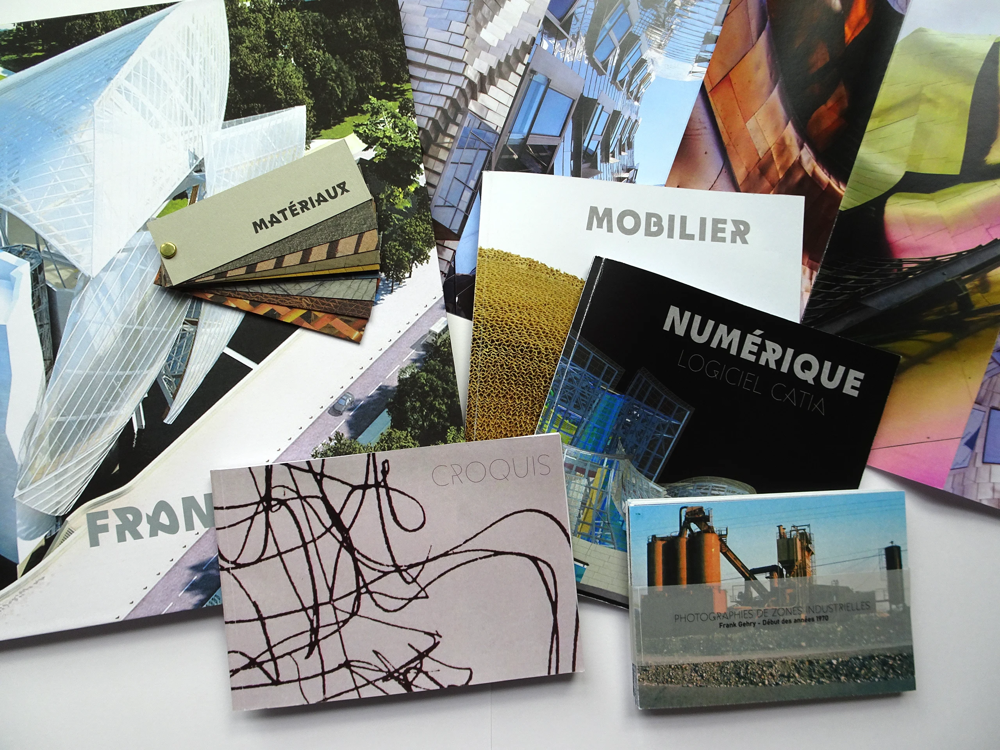
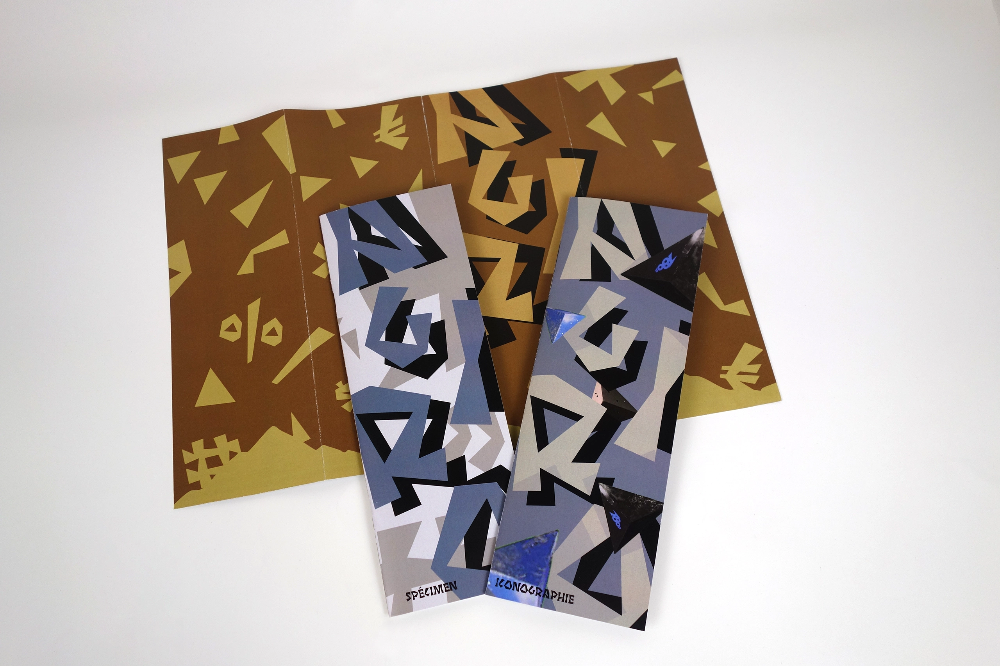
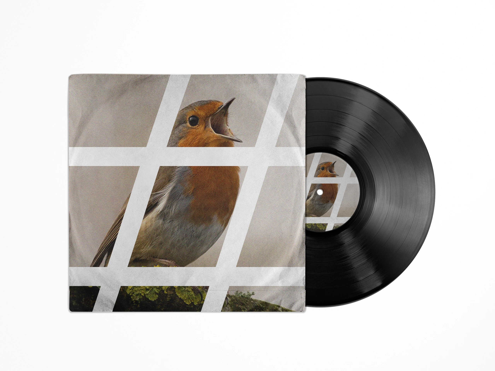
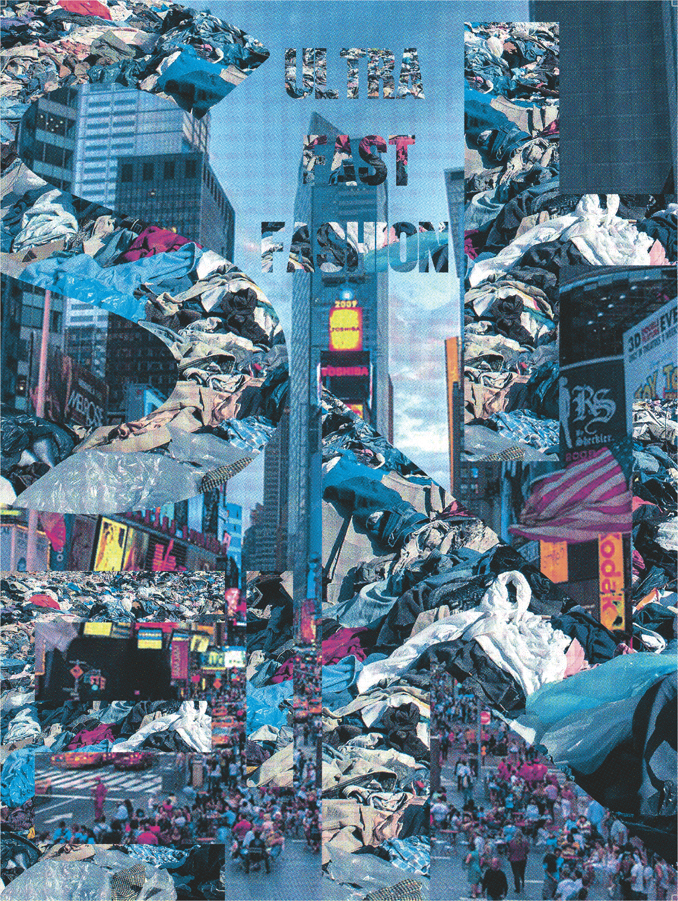
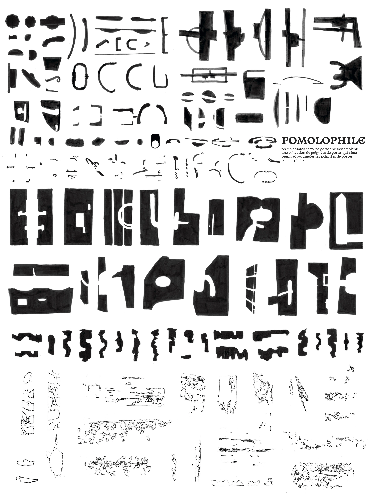
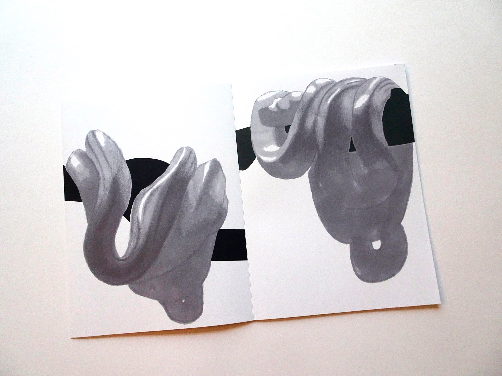
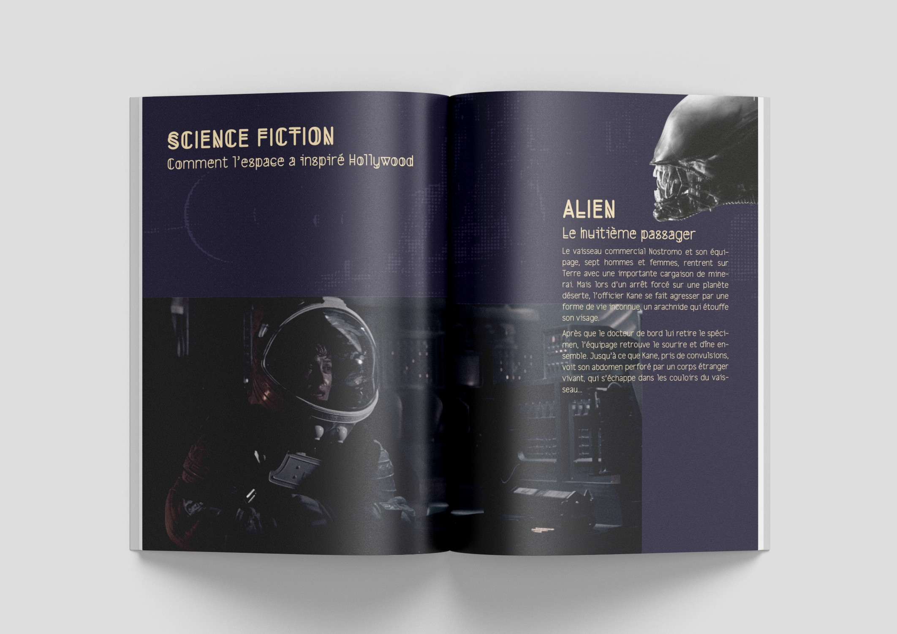

Frank Gehry - Artist's box set

Agiro - Typographic specimen

Opening PR2B - Vinyl covers

Itinéraires graphiques - Magazine

Actualités et images - Posters

Empreintes en Pagaille - Serie opening

Pomolophile - Poster and edition

Python vert - Drawing project

Voile astronomique - Edition